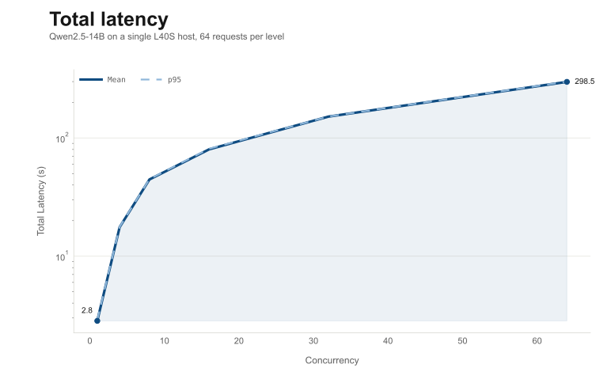
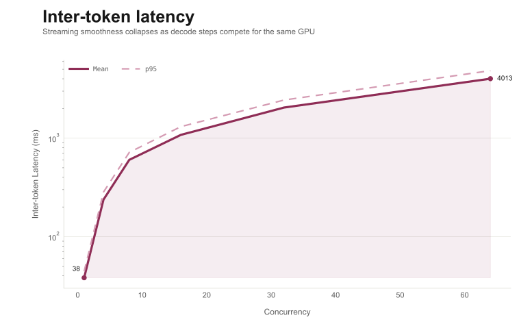
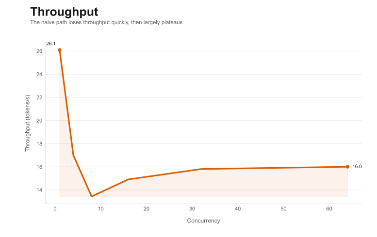
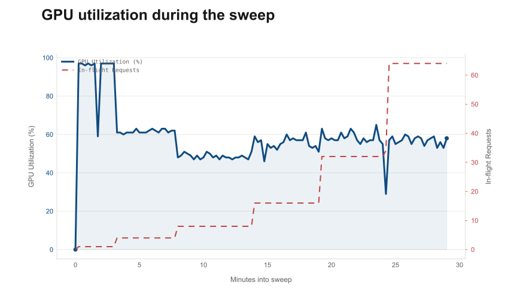

Understanding LLM Inference by Building a Server From Scratch
Introduction
Over the past few years, large language models have become a new kind of infrastructure. Most developers interact with them through APIs that look something like this:
POST /chat/completionsYou send a prompt, and a few seconds later the model returns a response.
From the outside, this interaction feels similar to calling any other web service. The request goes in, the answer comes back, and the complexity is hidden behind the API.

But once I started looking more closely at what happens inside the server that produces those responses, I realized that generating text with a large language model is very different from most other backend workloads.
Unlike a typical web request that can be processed in one step, language models generate text one token at a time. Each new token depends on the tokens that came before it. That means the model is constantly maintaining context while gradually extending the response.
At the same time, the server is not handling just one request. In a real system, many users are sending prompts at different times, each asking the model to generate responses of different lengths.
Suddenly the problem becomes more interesting. The server needs to:
- keep track of partially generated responses
- share GPU resources between many requests
- avoid recomputing work it has already done
- produce tokens quickly enough that the user does not feel the system is slow
What initially looks like a simple request-response interaction turns into a surprisingly complex system.
To explore this, I decided to host a model myself and trace the full lifecycle of a request, from the moment a prompt reaches the server to the moment the generated tokens are streamed back to the user.
For this investigation I chose Qwen-14B, a model that sits in a useful middle ground. It is large enough that efficiency matters, but still manageable to run on a single GPU with the right setup.
What Actually Happens When a Prompt Reaches an LLM?
To understand how LLM inference systems work, it helps to start with a simple mental model of what happens when a prompt reaches the model.
From the outside, interacting with a language model looks straightforward:
Client request -> Model -> ResponseBut internally, the process involves several steps.
At a high level, the pipeline looks like this:
User Prompt
↓
Tokenization
↓
Model processes tokens
↓
Next token predicted
↓
Token appended
↓
RepeatTo see why this matters for inference systems, let’s walk through each stage.
Converting Text into Tokens
Language models do not process raw text directly. Instead, they operate on tokens, which are numerical representations of pieces of text.
When a prompt reaches the server, the first step is to convert the text into tokens.
For example, the prompt:
Explain how transformers workmight be converted into something like:
[1043, 9821, 512, 1943]Each number represents a token in the model’s vocabulary.
Depending on the tokenizer, tokens may correspond to:
- whole words
- subwords
- punctuation
- special symbols
For example, the word transformers might be split into multiple tokens depending on the tokenizer used by the model.
This tokenization step converts the prompt into the format the neural network expects.
Once the prompt has been converted into tokens, it can be passed into the model.
Treating the Model as a Black Box
Modern language models like Qwen-14B are based on the transformer architecture. Internally, these models contain many layers of neural network computations that build contextual representations of tokens.
Entire books and courses are dedicated to explaining how transformers work. In this article, however, our goal is different.
This blog focuses on how LLMs are served efficiently, not on the details of how they are trained or how every attention computation works internally. For that reason, we will treat the transformer model as a black box.
From the perspective of an inference system, the model behaves like a function that takes a sequence of tokens and predicts the next token.
Conceptually:
tokens -> model -> probabilities for next tokenThe model reads the tokens in the prompt, performs a large amount of computation internally, and outputs a probability distribution over the next possible token.
For example, given the prompt:
Explain how transformers workthe model might predict something like:
"by" : 0.32
"using" : 0.18
"through" : 0.12
...The token with the highest probability is typically chosen as the next token in the generated response.
By treating the model this way, we can focus on the system behavior around the model — how requests are processed, how memory grows, and how computation is scheduled — which are the core challenges of building efficient LLM inference systems.
But generation does not stop after producing one token.
Generation Is a Loop
Language models generate text one token at a time.
After the first token is predicted, it is appended to the sequence of tokens, and the model is called again to predict the next token.
Conceptually, generation looks like this:
while response_not_finished:
next_token = model(tokens)
tokens.append(next_token)So if the prompt is:
Explain how transformers workthe model might produce a sequence like this:
Explain how transformers work
Explain how transformers work by
Explain how transformers work by processing
Explain how transformers work by processing sequencesEach new token becomes part of the input for the next step.
This loop continues until the model decides the response is complete.
This is also why responses from systems like ChatGPT often appear gradually, with tokens streaming back one by one.
At first glance, this generation loop seems simple enough.
But if we look more closely, an interesting problem appears.
The Hidden Cost of Repeated Computation
Every time the model generates a token, we call the model again with a longer sequence of tokens.
Consider what happens if the model processes the entire sequence from scratch every time.
Step 1:
model(prompt)Step 2:
model(prompt + token1)Step 3:
model(prompt + token1 + token2)Step 4:
model(prompt + token1 + token2 + token3)Notice what is happening here.
Every step requires the model to process all previous tokens again, even though most of that computation has already been done in earlier steps.
As the sequence grows longer, the amount of repeated work grows as well.
If the prompt contains 200 tokens and the model generates another 200 tokens, the naive approach would repeatedly process sequences of increasing length:
200 tokens
201 tokens
202 tokens
...
400 tokensThis means the model would be redoing large portions of the same computation over and over again.
For a model with billions of parameters, that would make inference extremely inefficient.
Naturally, inference systems try to avoid this repeated work.
Remembering Previous Computation (The KV Cache)
In the previous section we saw that a naive implementation would repeatedly process the entire sequence every time a new token is generated.
To avoid this repeated work, modern inference systems store intermediate results from earlier computations so they can be reused later.
To understand what is being stored, it helps to briefly recall what happens inside the model.
When the transformer processes tokens, each layer builds internal representations that capture how tokens relate to one another. Part of this process involves computing structures known as keys and values for every token.
You do not need to understand the full mathematics behind these vectors to understand the system behavior. The important idea is simpler:
When the model processes a token, it produces information that future tokens will need in order to understand the sequence.
Instead of recomputing this information every time a new token is generated, inference systems store it in memory.
This stored information is called the KV cache.
Conceptually, the process looks like this.
Prompt tokens
↓
Model computation
↓
Intermediate representations created
↓
Stored in KV cacheNow when the model generates the next token, it can reuse this stored information instead of recomputing everything.
Generate token1 using cached state
Generate token2 using cached state
Generate token3 using cached stateIn other words, the model remembers the work it has already done.
This turns generation into a much cheaper operation. Instead of repeatedly processing the entire sequence, the model only needs to compute the additional work associated with the new token.
The Tradeoff: Memory
Caching previous computation makes inference dramatically faster, but it introduces a new constraint.
The cached information must be stored somewhere.
In practice, it must live in GPU memory, because the model’s computations happen on the GPU.
As the sequence grows, the cache grows as well.
For example, if a request contains:
- a long prompt
- a long generated response
then the model must maintain a large KV cache associated with that request.
Now imagine a server handling many requests at the same time.
Each request may have:
- a different prompt length
- a different number of generated tokens
- its own KV cache stored in GPU memory
This means the inference system must constantly manage growing memory usage while continuing to generate tokens for multiple requests simultaneously.
At this point, hosting an LLM begins to look less like a simple web service and more like a resource management problem.
The server must carefully balance:
- compute on the GPU
- memory consumed by KV caches
- multiple requests generating tokens at different speeds
These constraints are what make LLM inference systems fundamentally different from traditional backend workloads.
Building a Naive LLM Server
In the previous section, we developed a simple mental model for how language models generate text.
A prompt is converted into tokens, those tokens are processed by the model, and the model predicts the next token. That token is appended to the sequence, and the process repeats until the response is complete.
Conceptually, generation looks like this:
tokens -> model -> next token -> append -> repeatAt first glance, serving a model should be straightforward. We load the model into GPU memory, expose an HTTP endpoint, and generate responses whenever a request arrives.
Let’s try exactly that.
A Simple LLM Server
For our experiments, we will use Qwen-14B, which is large enough to demonstrate realistic inference behavior but still manageable on a single GPU.
The most direct way to run inference is using the Hugging Face Transformers library. This library provides convenient APIs for loading models and generating text.
A minimal server might look like this:
from fastapi import FastAPI
from transformers import AutoModelForCausalLM, AutoTokenizer
import torch
app = FastAPI()
tokenizer = AutoTokenizer.from_pretrained("Qwen/Qwen2.5-14B-Instruct")
model = AutoModelForCausalLM.from_pretrained(
"Qwen/Qwen2.5-14B-Instruct",
torch_dtype=torch.float16,
device_map="auto"
)
@app.post("/generate")
def generate(prompt: str):
inputs = tokenizer(prompt, return_tensors="pt").to("cuda")
outputs = model.generate(
**inputs,
max_new_tokens=200
)
return tokenizer.decode(outputs[0])From a high level, this architecture looks like this:
Client
↓
FastAPI endpoint
↓
model.generate()
↓
GPUWhenever a request arrives, the server tokenizes the prompt, calls model.generate(), and returns the generated response.
This seems perfectly reasonable.
But once we start testing the system, some interesting behavior begins to appear.
Testing With a Single Request
Let’s begin with the simplest possible scenario: a single user sending a prompt.
POST /generateThe model processes the prompt, generates tokens one by one, and eventually returns a response.
The latency might look something like this:
- Time to first token: ~2-3 seconds
- Total response time: ~8-10 seconds
For a large model running on a single GPU, this is not particularly surprising.
However, something curious happens if we look at GPU utilization during this process.
Running:
nvidia-smioften reveals that the GPU is not fully utilized during generation.
Even though the model is large and the GPU is powerful, utilization frequently fluctuates and sometimes remains relatively low.
This suggests that the system is not using the GPU as efficiently as it could.
But the real problems appear once multiple users start sending requests.
What Happens With Multiple Requests?
Now imagine that several users send requests at roughly the same time.
With our simple server, each request follows the same path:
Client -> FastAPI -> model.generate() -> GPUBut GPUs cannot execute many independent generation loops simultaneously.
In practice, this means the requests end up being processed mostly sequentially.
Conceptually, the system behaves like this:
Request A -> GPU
Request B -> waiting
Request C -> waitingAs the number of requests increases, the waiting time increases as well.
This quickly leads to rising latency.
To make that behavior visible, I ran a simple concurrency sweep on the naive server using the same prompt, 64 requests per level, and concurrency levels of 1, 4, 8, 16, 32, and 64.

The shape is the important part. At concurrency 1, average latency was a few seconds. By concurrency 64, the same server was taking several minutes to finish a request. The model did not change. The hardware did not change. Only the request scheduling changed.
The problem is even more obvious if we look at streaming quality instead of just end-to-end latency.

At low concurrency, tokens arrive fast enough to feel interactive. Under heavier load, token emission slows dramatically. This is what users actually experience as a sluggish or stalled stream.
Memory Usage Also Grows
Another interesting observation appears when we examine GPU memory usage.
Each request maintains its own KV cache, which stores intermediate representations for previously processed tokens.
As responses grow longer, the cache grows as well.
If several requests are active at the same time, the server must store a separate cache for each request.
This means GPU memory usage depends on:
- prompt length
- number of generated tokens
- number of concurrent requests
In other words, the inference server is not only managing computation — it is also managing large amounts of memory associated with each request.
Why This Approach Breaks Down
At this point, we can see that simply calling model.generate() inside an HTTP endpoint has several limitations.
The server struggles with:
- inefficient GPU utilization
- increasing latency under load
- growing GPU memory usage
Serving large language models efficiently turns out to be a systems problem, not just a modeling problem.

This is the efficiency failure in one chart. Concurrency increases dramatically, but throughput improves only briefly and then largely flattens. The server spends more time making users wait than turning extra load into useful token generation.

That mismatch is the core problem. The server accumulates more in-flight work, but it does not translate that work into clean, sustained GPU utilization. This is exactly the gap that a real inference engine tries to close.
We need a system that can:
- schedule work from multiple requests efficiently
- keep the GPU busy
- manage KV cache memory carefully
This is exactly the class of problems that specialized inference engines like vLLM are designed to solve.
In the next section, we will replace our naive server with vLLM and examine how its architecture addresses these challenges.
Hosting the Model with vLLM
In the previous section, we built a simple inference server using FastAPI and Hugging Face Transformers. That setup was useful as a baseline, but it exposed several problems quickly:
- requests were largely processed one at a time
- latency increased sharply under concurrent load
- GPU utilization was inconsistent
- memory usage grew with each active request
The limitation was not in FastAPI itself. The issue was that our server treated inference as a simple call to model.generate(), with each request effectively running its own generation loop.
In this section, we keep the same FastAPI API layer, but replace the inference backend with vLLM.
Replacing the Inference Engine
In the naive implementation, the architecture looked like this:
Client
↓
FastAPI endpoint
↓
model.generate()
↓
GPUWith vLLM, the FastAPI layer remains, but inference is delegated to a serving engine designed specifically for LLM workloads.
Client
↓
FastAPI Server
↓
vLLM Engine
↓
Scheduler + KV Cache Manager
↓
GPUThis distinction matters.
From the outside, the service still behaves like a normal API. A client sends a prompt and receives generated text. But internally, the inference engine now has much more control over how requests are executed, how memory is managed, and how GPU work is scheduled.
To understand what vLLM is optimizing, we first need to separate LLM inference into two different phases: prefill and decode.
Prefill vs Decode
When a request reaches the model, not all computation looks the same.
The first phase is prefill.
During prefill, the model processes the entire prompt and builds the initial KV cache.
Prompt tokens
↓
Model processes full prompt
↓
KV cache createdIf the prompt has 500 tokens, prefill means running those 500 tokens through the model to establish the request’s initial context.
The second phase is decode.
Once the prompt has been processed, the model starts generating new tokens one at a time, reusing the KV cache from earlier steps.
KV cache
↓
Generate one token
↓
Update cache
↓
RepeatThese two phases have very different characteristics.
| Phase | Characteristics |
|---|---|
| Prefill | heavier computation, runs once per request |
| Decode | smaller per step, repeated many times |
This difference is important because an efficient inference system should not treat all work the same way. Prefill and decode place different demands on the GPU, and requests may be at different stages at the same time.
That is where scheduling comes in.
The Scheduler
Once multiple requests are active, the engine has to answer a constant question:
What should the GPU work on next?
Some requests may still be in prefill. Others may already be in decode. Some may have short prompts, others long ones. Some may be close to finishing, while others have just started.
vLLM handles this through a scheduler.
The scheduler is responsible for:
- tracking active requests
- knowing which requests are in prefill and which are in decode
- deciding which work should be grouped together
- forming batches that keep the GPU busy
- coordinating memory usage as requests enter and leave the system
Conceptually, the scheduler sits between incoming requests and GPU execution:
Incoming requests
↓
Scheduler
/ \
Prefill Decode
\ /
Batched GPU executionThis is the key shift from the naive server.
In the naive implementation, each request effectively controlled its own generation loop. In vLLM, requests no longer operate independently. They become units of work that the scheduler can coordinate across the whole system.
Once that scheduling layer exists, vLLM can start applying more sophisticated optimizations.
Two of the most important are continuous batching and paged attention.
Continuous Batching
In the naive server, concurrent requests behaved roughly like this:
Request A → GPU
Request B → waiting
Request C → waitingEven though the GPU could handle more work, the system had no effective way to combine generation steps across requests.
vLLM changes this through continuous batching.
Instead of waiting for one request to finish, the scheduler dynamically groups token-generation work from multiple active requests into shared GPU executions.
Conceptually:
Step 1: decode token for A, B, C
Step 2: decode token for A, B, C, D
Step 3: decode token for A, C, DNotice what is happening here:
- requests can enter the batch while others are already running
- shorter requests can leave as soon as they finish
- the batch changes over time instead of being fixed upfront
That is why it is called continuous batching.
This is especially well suited to LLM serving, because decode already happens one token at a time. The scheduler can exploit that structure to keep the GPU busy across many users at once.
Paged Attention
Scheduling and batching improve compute efficiency, but memory is still a major part of the problem.
Each active request carries its own KV cache, and as more tokens are processed, that cache grows. With many concurrent requests, memory pressure becomes a serious constraint.
A traditional implementation often treats the KV cache as large contiguous allocations. That can waste memory and lead to fragmentation.
vLLM addresses this with paged attention.
Instead of allocating one large continuous block per request, the KV cache is split into smaller pages that can be assigned and reused more flexibly.
KV Cache Memory
├─ Page 1 → Request A
├─ Page 2 → Request B
├─ Page 3 → Request A
├─ Page 4 → Request CThis makes memory management much more efficient, especially when requests have different lengths and complete at different times.
Paged attention does for KV cache memory what virtual memory does for general-purpose systems: it makes allocation more flexible and reduces waste.
In the next section, we will benchmark the vLLM-based server against the naive implementation and compare:
- GPU utilization
- throughput
- latency
That is where the architectural differences become visible in practice.
What Actually Improved?
In the previous sections we replaced our naive inference pipeline with vLLM and introduced several architectural changes:
- a scheduler that coordinates requests
- continuous batching to improve GPU utilization
- paged attention for more efficient KV cache management
But architectural improvements only matter if they produce measurable results.
To evaluate the impact, we reran the same experiments from earlier using the vLLM-based server.
Our goal was to measure three things:
- GPU utilization
- throughput
- latency under load
Experiment Setup
All tests were run using Qwen-14B on a single A10G GPU (AWS g5.2xlarge).
The benchmark setup was intentionally simple.
We generated requests with varying levels of concurrency and measured how the server behaved.
Each request used the same prompt and generated approximately 200 tokens.
- Prompt length: ~150 tokens
- Generated tokens: ~200
We ran tests with the following levels of concurrent users:
- 1 request
- 5 requests
- 10 requests
- 20 requests
For each configuration we recorded:
- average latency
- total tokens generated per second
- GPU utilization
GPU Utilization
One of the first differences becomes visible when we examine GPU utilization.
In the naive server, utilization fluctuated significantly and often remained below the GPU's capacity.
This happened because each request generated tokens independently, leaving periods where the GPU was underutilized.
With vLLM, the scheduler continuously batches token generation across requests, keeping the GPU active more consistently.
Example comparison:
| System | Avg GPU Utilization |
|---|---|
| Naive server | ~35-45% |
| vLLM | ~80-90% |
The improvement comes from continuous batching, which allows multiple requests to contribute work to each GPU execution step.
In practice, this means the GPU spends less time idle.
(This is a good place for a GPU utilization chart.)
Throughput
The second metric we examined was throughput — how many tokens the system could generate per second.
Throughput is particularly important for production systems because it determines how many users a single GPU can support.
Example results:
| System | Tokens / second |
|---|---|
| Naive server | ~40 tokens/s |
| vLLM | ~150 tokens/s |
This improvement occurs for two main reasons:
- Continuous batching allows the GPU to process tokens from multiple requests simultaneously.
- Paged attention improves memory efficiency, allowing more requests to remain active without exhausting GPU memory.
The result is a system that can generate significantly more tokens per second using the same hardware.
(Insert throughput chart here.)
Latency Under Load
Latency is often the most noticeable metric from a user's perspective.
With the naive server, latency increased rapidly as more users sent requests.
Example behavior:
| Concurrent Requests | Naive Latency |
|---|---|
| 1 | ~8s |
| 5 | ~20s |
| 10 | ~40s |
This occurred because requests were effectively processed one at a time.
With vLLM, latency still increases as load grows, but the increase is much more gradual.
Example results:
| Concurrent Requests | vLLM Latency |
|---|---|
| 1 | ~7s |
| 5 | ~10s |
| 10 | ~14s |
Because vLLM mixes token generation across requests, no single request monopolizes the GPU.
Instead, the scheduler distributes work across all active requests.
(Insert latency comparison chart.)
What Changed Under the Hood
At first glance, the improvements may seem surprising. After all, we are still using the same model on the same GPU.
The difference lies entirely in how the work is scheduled.
The naive server treated each request as an isolated process.
Request A → finish
Request B → start
Request C → startvLLM instead coordinates generation across all active requests:
Token A1
Token B1
Token C1
Token A2
Token B2
Token C2This allows the GPU to operate much closer to its maximum capacity.
At the same time, paged attention ensures that KV cache memory can be reused efficiently as requests enter and leave the system.
Together, these changes transform the inference pipeline from a simple request-response loop into a coordinated scheduling system.
Conclusion
At first glance, hosting a language model appears straightforward. Load a model, expose an API endpoint, and generate text whenever a request arrives.
In practice, the problem is much more subtle.
In this article, we started by building a mental model of how language models generate text. Instead of diving into the details of transformer architecture, we focused on the mechanics that matter for inference systems: tokenization, the generation loop, KV caching, and the distinction between prefill and decode.
From there, we built a naive LLM server using FastAPI and the Hugging Face Transformers library. While the implementation was simple, the limitations quickly became clear. Requests were mostly processed sequentially, GPU utilization remained low, and latency increased rapidly as concurrent users increased.
These issues were not caused by the model itself, but by the way inference work was scheduled.
Replacing the backend with vLLM fundamentally changed how the system behaved. Instead of treating each request as an isolated generation loop, vLLM introduced a coordinated execution engine built around:
- a scheduler that manages active requests
- continuous batching that keeps the GPU busy
- paged attention that manages KV cache memory efficiently
Running the same benchmarks showed substantial improvements in GPU utilization, throughput, and latency under load — all without changing the model or the hardware.
The key takeaway is that serving large language models efficiently is not just a modeling problem. It is primarily a systems problem involving scheduling, memory management, and resource utilization.
Modern inference engines like vLLM exist because naive approaches leave a large amount of performance on the table.
In this article, we focused on a single-node setup to understand the core ideas behind efficient LLM serving. But real-world deployments introduce additional challenges: handling traffic spikes, scaling across multiple GPUs, managing replicas, and monitoring system health.
In the next article, we will take the server we built here and explore how to productionize it, including horizontal scaling, request queues, and operational monitoring.